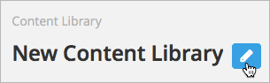

5.5. 内容库¶
5.5.1. 内容库概览¶
在 Studio 中，如果你有创建课程的特权，你可以新建一个库来创建一系列的组件，用在你的课程中的随机作业分配上。 你可以添加 HTML 组件，问题和视频组件到一个库中；终端评估和讨论组件在库中不支持。
Note
内容库只有在具有这种格式的课程标识符的课程中才可用: {key type}:{org}+{course}+{run}. 例如，course-v1:edX+DemoX+Demo_2015. 你的课程标识符出现在浏览器地址栏中作为URL的最后部分，当你在Studio中打开课程中。更多细节，请参照 创建新课程.
在新建一个库并添加组件之后，如果你在你的课程中有 启动内容库 ，你就可以使用在课程随机作业分配中这些库组件， 你通过添加一个随机内容块到课程单元中并指定库名称来达到这个目的，随机内容将从这个库中获取。你也可以指定分配给每个学生的问题数目和类型。
库有独立的用户和从课程中访问的访问等级。最初，只有创建它的人可以访问库，他可以添加其他用户到库中。更多细节，请参照 给予其他用户对你的库的访问权. 你创建或访问的库列在Studio主页的 库 标签上.
请看以下关于创建和管理内容库的细节部分.
- 启动内容库
- 创建一个新的库
- 添加组件到库
- 查看库的内容
- 编辑库中的组件
- 给予其他用户到你的库的访问权
- 导入库
- 导出库
请看以下关于在课程中使用内容库组件的细节部分.
- 在课程中使用库中的组件
- 添加一个随机内容块到你的课程
- 查看在随机内容块中的匹配组件
- 编辑在随机内容块中的组件
- 获取库内容的最新版本
5.5.2. 创建一个新的库¶
使用 内容库 创建一系列组件，用在你的课程的随机作业分配中。如果你有课程创建特权，你可以创建库.
关于在你创建一个库后添加其他用户到库的信息，请参照:ref:给予其他用户到你的库的访问权.
创建一个新的库，请遵循以下步骤.
登陆到Studio.
点击 新建库.
输入你的新的库的必要信息，点击 创建.
Note
仔细输入新库的信息，在这域输入的信息会成为你的库的URL的一部分，所以在 库名称, 组织 和 库编号 这些域中的字符总数必须少于或等于65.

- 对于 库名称, 输入你的库的公开展示名称，选择一个有意义的名称会帮助你和其他的课程团队成员识别库. 例如, “Level 200 Math Problems”. 当你添加一个随机内容块到课程单元中时，你使用库名称来指定这个库作为随机作业分配的来源.
- 对于 组织, 输入你的大学的标识符。例如，输入 HarvardX 或 MITx，注意不要包含空格或特殊字符。
- 对于 库编号, 为你的库输入一个在你的组织里唯一的标识符，这个编号会成为你的库的URL的一部分，所以不要包含空格或特殊字符。
- 点击 创建.
你可以看到新的库了，现在你可以添加组件到其中。关于添加组件到库中的详细信息请参照 添加组件到库.
5.5.3. 编辑库¶
在你创建一个库后，你能对初始库信息做的改变只有它的名称。但是，无论何时，你可以在对你的库中的组件做改变，包括添加或删除组件，编辑组件的设置。关于编辑库中内容的详细信息，请参照 编辑库中的组件 和 添加组件到库.
要改变库名称，请遵循以下步骤.
登陆到 Studio.
点击 库, 然后点击你想编辑名称的库.
点击在库名称旁边的 编辑 图标.
库名称域就变成可编辑的了.

- 在库名称域，进行编辑或输入一个新的库名称.
- 点击库名称域以外的任何区域来保存你的更改.
关于给予其他用户到库的访问权的详细信息请参照 给予其他用户到你的库的访问权.
5.5.4. 添加组件到库¶
要添加新的 组件 到你的库中，请遵循以下步骤.
- 登陆到 Studio.
- 点击 库, 然后点击你想添加组件到其中的库.
- 点击 添加组件, 然后点击你想添加的组件的类型，在 添加新的组件 下面.
关于你可以添加到库中的组件的类型的详细信息，请参照以下.
- 管理HTML组件
- 管理问题组件
- 管理视频组件
在你添加一个组件到库后，你可以编辑它的设置，这些设置在组件从库中被选择时和在课程中被使用时保持不变.
当来自库中的组件用在随机内容块时，你可以进一步编辑组件，只要它存在单元中，而并不影响库中的原始版本。详细信息，请参照 编辑库中的组件 和 获取库内容的最新版本.
5.5.5. 查看库中的内容¶
要查看Studio中的库中的全部内容，请遵循以下步骤.
- 登陆到 Studio.
- 点击 库, 然后点击你想查看其组件的库.
- 可选择地，点击位于库页面右上位置的 隐藏预览 以收起组件预览，并只查看组件展示名称的列表。要回到库中的组件的完整预览，请点击 显示预览.
库中的组件按它们被添加的顺序显示，最近添加的显示在底部。如果你的库含有不止10个组件，额外的组件会在另一个页面显示.
在当前页面中显示的组件的范围和组件的总数，显示在页面的顶部.
你可以通过这些就去在页面之间导航:
使用在列表的顶部和底部的 < 和 > 按钮导航到前一页面和后一页面.
在页面询问，你可以编辑页面范围内的弟一个数字。点击数字来把你的光标放在域中，然后输入你想跳往的页面的编号.

要查看库中匹配的组件的列表，请参照 查看随机内容块中的匹配组件.
要查看作为一个学生将会看到的随机内容，请参照 作为学生查看随机内容.
5.5.6. 编辑库中的组件¶
在你添加组件到库后，你可以编辑，复制或删除它们.
对于逐步的关于编辑复制或删除的说明，请对照以下的主题.
- 编辑组件
- 复制组件
- 删除组件
Note
如果你在库中在课程中使用的的组件时，这些在 “源” 的更新不会影响到课程中，除非你的课程单元的随机内容块中进行手动更新。关于更新在你课程中使用的库组件以匹配库中的最新版本的详细信息，请参照 获取库组件的最新版本.
5.5.7. 删除库¶
你不能删除库，而是可以停止使用一个不想使用的库。要做到这点，首先确保没有它的组件在你的课程中被使用，然后删除库中的所有组件。你也可以 编辑库名称 来向其他课程教员澄清这个库不应该在课程中被用作随机作业内容的来源.
关于删除库中组件的详细信息，请参照 编辑库中的组件.
5.5.8. 给予其他用户对你的库的访问权¶
当你创建一个库时，你自动被赋予库的管理员的角色.
你可以给予其他Studio的用户以对你的库的访问权。取决于你给予他们在库中的访问权限，其他的库使用者可以在课程查看和使用库内容，编辑库内容或添加和管理其他库用户。你给予访问权的所有用户必须在Studio中注册并有一个活跃的账户。
对库有以下几个层次的访问:
- 用户 – 用户可以查看库内容并可以在他们的课程中使用库组件，但他们不能编辑库中的内容.
- 教员 – 教员可以在他们的课程中使用库组件，另外，作为内容的合作者，他们有在库中完全的编辑特权.
- 管理员 – 管理员拥有库的完全编辑特权另外，他们可以添加和移除其他团队成员的库访问权。在一个库中必须至少有一个用户拥有管理员特权.
Note
对库的访问层次是有等级的。你可以添加新的仅具有 用户 访问等级的库成员，在这之后你可以给予他们 教员 的访问等级。你可以把 管理员 的访问等级给予那些已经拥有 教员 访问等级的人.
5.5.8.1. 添加用户到库¶
要授予用户对库的初始的 用户 等级访问，请遵循以下步骤.
Note
只有拥有 管理员 访问等级的库用户才能添加用户到库中.
确保新的库成员拥有活跃的Studio账号.
在Studio主页，点击 库 标签并定位到你要对其添加这个用户的库.
从 设置 菜单选择 用户访问.
在 用户访问 页面，点击 添加新用户.
输入新用户的电子邮箱，然后点击 添加用户.
用户被添加到拥有 用户 访问等级的库成员的列表中.
5.5.8.2. 从库中移除用户¶
你可以在任何时候从库中移除用户，不管他们拥有什么样的访问等级.
要从库中移除用户，请遵循以下步骤.
- 在Studio中，点击 库 标签并定位到你的库.
- 从 设置 菜单选择 用户访问.
- 在 用户访问 页面，定位到你想移除的用户.
- 在用户框上方悬停然后点击垃圾箱图标.
你会被提示确认删除.
- 点击 删除.
用户于是被从库中移除.
5.5.8.3. 添加教员或管理员访问¶
库的访问层次是等级化的。你可以添加仅具有 用户 访问等级的新的库成员，然后你可以给予他们 教员 的访问等级。你只可以把 管理员 访问等级给予已经拥有 教员 访问等级的人.
要给予一个库成员对库的更高的访问等级，请遵循以下步骤.
- 在Studio中，点击 库 标签并定位到你的库.
- 从 设置 菜单选择 用户访问.
- 在 用户访问 页面中，定位你想给予额外特权的用户.
- 如果他当前已经拥有 用户 层次的访问权，点击 添加教员访问.
- 如果他当前已经拥有 教员 层次的访问权，点击 添加管理员访问.
用户的显示列表会被更新以表明获得新的访问等级。另外， 他们的列表包含一个移除他们现在访问等级的和把他们移动到之前的访问等级的按钮。关于降低用户对库的访问权的详细信息，请参照 移除教员或管理员.
5.5.8.4. 移除教员或管理员¶
在你授予用户 教员 或 管理员 访问等级时，你 (或者其他的 管理员 库用户) 可以降低他们的访问等级.
要往往库用户中移除 教员 或者 管理员 访问，请遵循以下步骤.
- 在Studio中，点击 库 标签并定位到你的库.
- 从 设置 菜单选择 用户访问.
- 在 用户访问 页面，定位到你想更改访问等级的用户.
- 如果她当前已经拥有 教员 层次的访问权，点击 移除教员访问.
- 如果她当前已经拥有 管理员 层次的访问权，点击 移除管理员访问.
用户显示列表会被更新以表明他们的新角色.
Note
在一个库中至少要有一名管理员，如果只有一个用户具有管理员角色，你不能从管理员角色中移除他或她，除非你先赋予另一个用户以管理员角色.
5.5.9. 导出和导入库¶
5.5.9.1. 导出库¶
有多个理由你会想导出你的库.
- 保存你的工作进度
- 在你的库中直接编辑 XML
- 创建一个你的库的备份拷贝
- 与另一个课程团队成员共享
当你导出你的库时，Studio 会创建一个 .tar.gz 文件 (即一个 .tar用 GNU Zip 压缩的文件). 这个导出文件包含库中的问题，包含任何你在库中对问题设置的定制。导出并不包含库的设置，比如用户访问许可.
要导出一个库，请遵循以下步骤.
- 在 Studio 中, 选择 库 标签.
- 定位到你想导出的库.
- 从 工具 菜单选择 导出.
- 点击 导出库内容 并指定你想保存文件的位置.
当导出过程结束时，你可以在你的电脑上访问 .tar.gz 文件.
5.5.9.2. 导入库¶
你可能想导入库如果你已经在 Studio 外开发或者更新库内容，或者如果你想重写不确定的或者过期的库版本.
Warning
当你导入库时，被导入的库会完全替代当前存在的库以及它的内容，你不能撤消库导入。在你前进之前，我们推荐你导出当前的库，这样你就有一个它的备份拷贝了.
你导入的库文件必须是一个 .tar.gz 文件 (即, 一个用 GNU Zip 压缩的 .tar 文件). 这个 .tar.gz 文件必须包含一个 library.xml 文件.
要导入一个库，请遵循以下步骤.
- 在 Studio 中, 选择 库 标签.
- 定位到你想导入一个新的库内容到其中的库.
- 从 工具 菜单选择 导入.
- 点击 选择一个文件导入 并选择你想导入的 .tar.gz 文件.
- 点击 用选择的文件替换我的库.
Warning
导入过程有5个阶段。在前两个阶段（上传和解压缩） 不要从 库导入 页面导航到其他地方，这样做会导致导入过程终止。你只可以在解压缩阶段后才能离开页面。我们建议在所有导入阶段结束前不要对库做重要的更改.
- 当导入过程结束时，点击 查看更新后的库 来查看导入的库.
Note
如果你导入的库包含对在课程中使用的组件的更改，课程不会反映出这些库的更新，直到你在课程单元中手动更新随机内容块。 关于更新在你的课程中使用的库组件以匹配内容库中的最新版本的详细信息，请参照 获取库内容的最新版本.